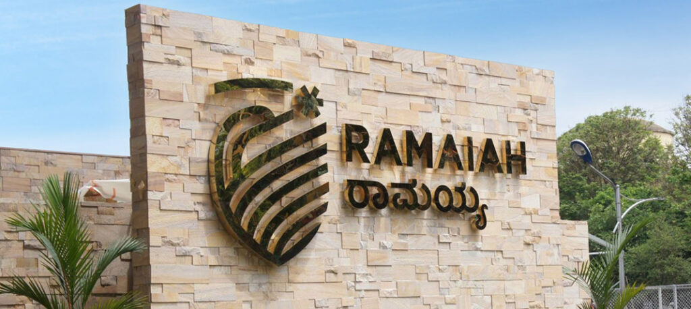

About Lab
Saikat's Lab, based at the Department of Biotechnology, Faculty of Natural Sciences at Ramaiah University of Applied Sciences (RUAS), Bengaluru, India. Our research sits at the interface of biology, mathematics, and data science, with a strong focus on pathogens (such as tuberculosis (TB)). We study host-pathogen interactions (such as Mycobacterium tuberculosis (Mtb)) using mathematical and systems modeling, infectious disease epidemiology, and immunological analysis.
Our research involves:
- Developing mechanistic and epidemiological models to capture disease progression.
- Investigating the protective effects of prior Mtb exposure.
- Identifying individuals who would benefit most from preventive therapies.
- Studying T cell dynamics and immune response behavior during infection.
We integrate experimental and clinical data into our models and apply advanced computational programming languages to drive our data modeling and simulation efforts. Beyond theory, our lab is committed to translational impact. We use simulation frameworks to evaluate public health interventions, including vaccination strategies and treatment adherence programs. By combining quantitative modeling with biomedical insights, we aim to contribute meaningfully to TB control and improved health outcomes at the population level.
Teaching
- Bioinformatics
- Mathematical Biology
- Immuno-informatics
- Artificial Intelligence
Research Interests
Team
Postdoc
Updated soon...
Research Area:
PhD
Updated soon...
Research Area:
MSc
Anuja Jatti (Completed)
Project: Causal Discovery and Structural Equation Modelling of Cytological Features in Breast Cancer Diagnostics: A Bayesian Network Approach in R
Grants
- Updated soon...
Open Position
- PhD
- Masters
- Postdoc
Openings are available. Candidates with a background in applied mathematics, computational biology, bioinformatics, or related fields are encouraged to apply.
Postdoc: We welcome applications from highly motivated researchers interested in advancing independent research in the above areas. We actively support and mentor candidates to apply for national and international fellowships, including NPDF/DBT-RA/ICMR PDF/TWAS-DBT PDF, and other competitive funding schemes.
Please send your CV, a brief statement of interest, and transcripts to the mail id of Dr. Saikat Batabyal.
Publications
- Saikat Batabyal, Kevin Urdahl, Vitaly V Ganusov (2025). Potential limitations of community-wide strategy to treat Mycobacterium tuberculosis infection. (Communicated soon…) .
- Saikat Batabyal, Chakraborty, D, Ganusov, V (2024). A brief overview of mathematical modeling of the within-host dynamics of Mycobacterium tuberculosis. Frontiers in Applied Mathematics and Statistics. [DOI]
- Saikat Batabyal (2021). COVID-19: Perturbation dynamics resulting chaos to stable with seasonality transmission. Chaos, Solitons & Fractals. [DOI]
- Saikat Batabyal et.al (2021). Mathematical computations on epidemiology: A case study of the novel coronavirus (SARS-CoV-2). Theory in Biosciences. [DOI]
- Saikat Batabyal et.al (2021). Diffusion driven finite time blow-up and pattern formation in a mutualistic preys-sexually reproductive predator system: A comparative study. Chaos, Solitons & Fractals. [DOI]
- Saikat Batabyal et.al (2020). Explosive predator and mutualistic preys: A comparative study. Physica A: Statistical Mechanics and its Applications. [DOI]
- Saikat Batabyal et.al (2021). Pattern formation in an explosive food chain model: the case of “apparent” mutualism. The European Physical Journal Plus. [DOI]
- Saikat Batabyal et.al (2021). Public healthcare system capacity during COVID‐19: A computational case study of SARS‐CoV‐2. Health Science Reports. [DOI]
Contact
Email: stbatabyal@gmail.com
Email: saikatbatabyal.bt.ls@msruas.ac.in
Ramaiah University of Applied Sciences
Dept. of Biotechnology | Faculty of Natural Sciences
Location: Bangalore, India
